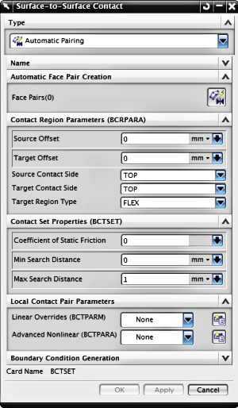

通过面对面接触可以定义两个曲面之间的接触。
可以手工指定接触曲面，也可以让软件自动确定面对中面的相互接触关系：
要在接触定义中手工指定源和目标曲面，您可以选择现有的仿真区域，或创建一个新仿真区域
要让软件自动确定接触曲面，可以使用创建自动面对对话框，指定软件用于搜索曲面的标准

注释
面对面接触基于求解器并直接在两个面之间定义接触，其它相似的命令，曲面接触网格，基于单元并在实体的两个选定面之间或在不同组件之间创建并定义接触面。